Señalización Vial
Ley 769 del 2002: Código Nacional de Tránsito
Manual De Señalización Vial del 2015
qué son
normatividad
clasificación
forma
verticales
dermarcaciones
Haz clic en cada botón para conocer los tipos de intersecciones


dermarcaciones
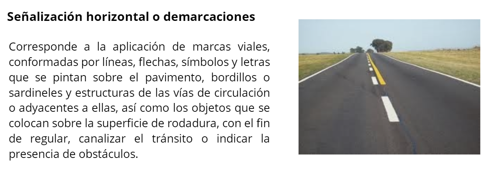
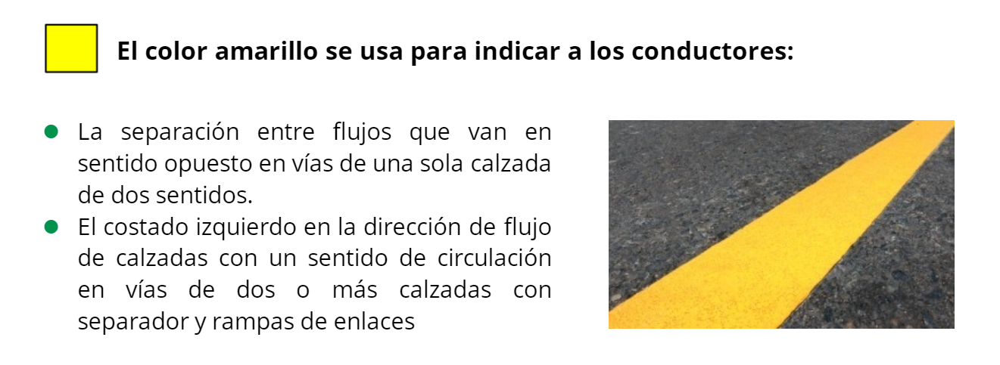
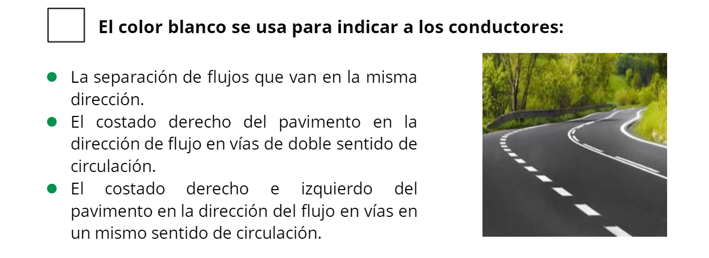
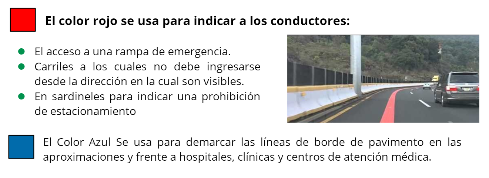
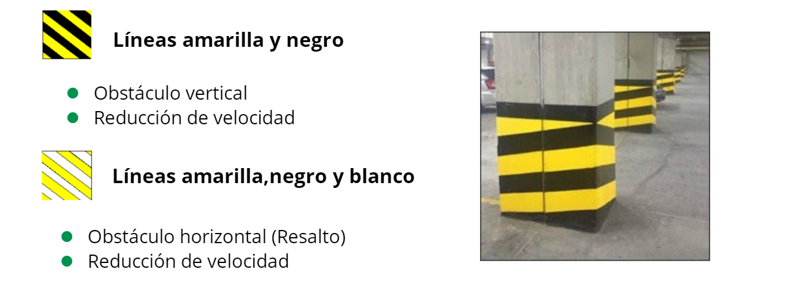
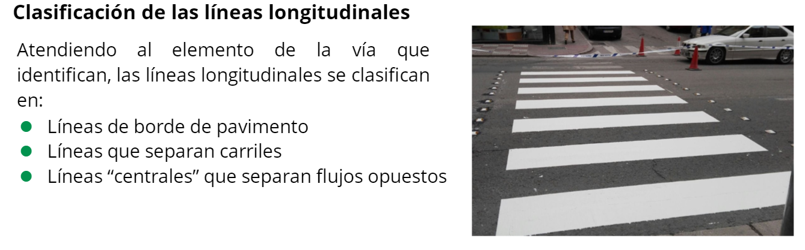
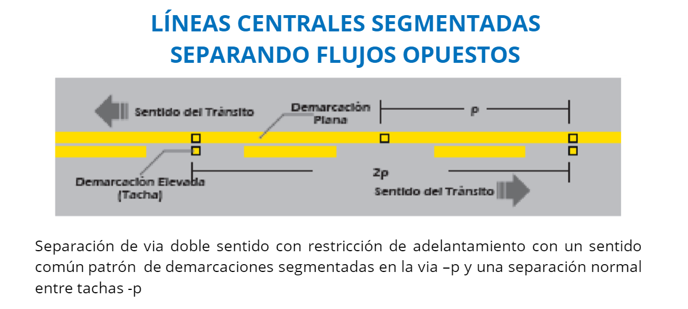


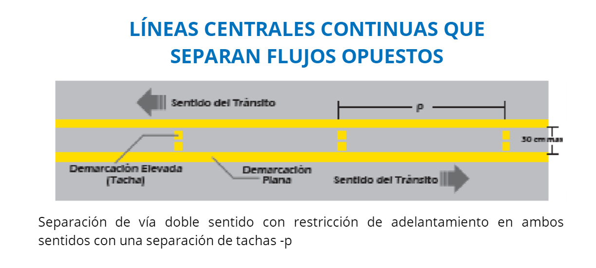
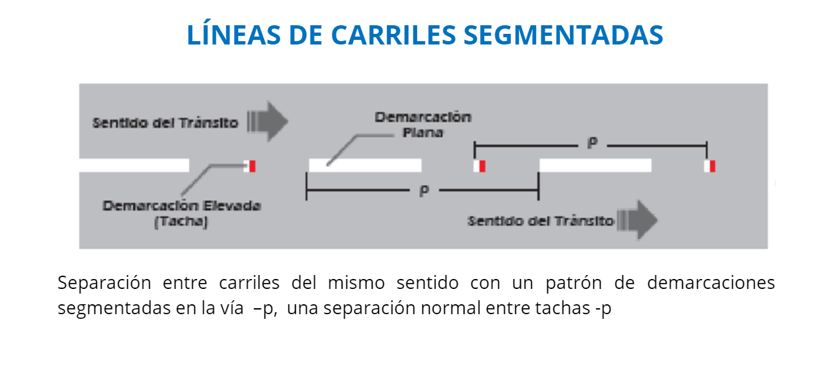
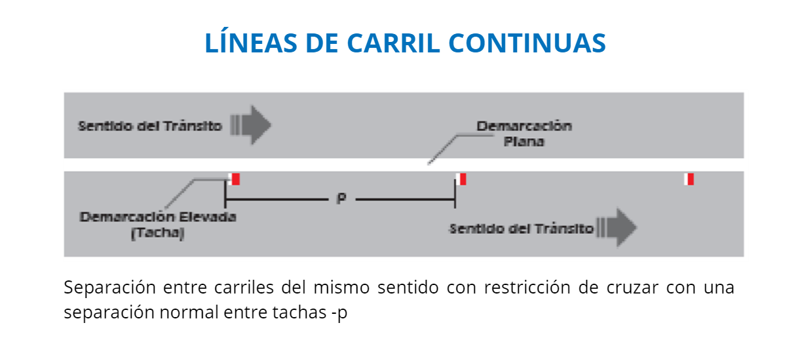
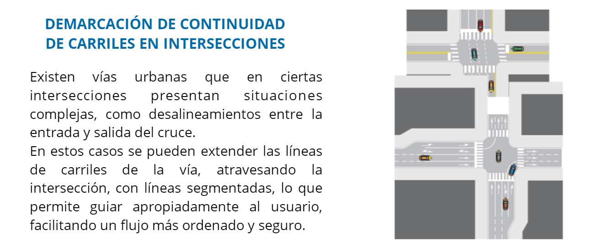
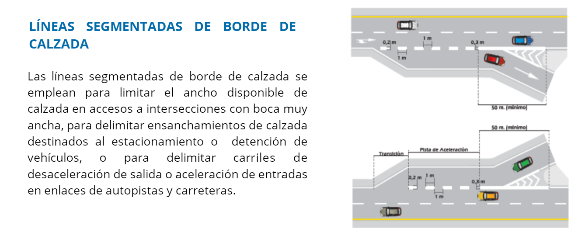
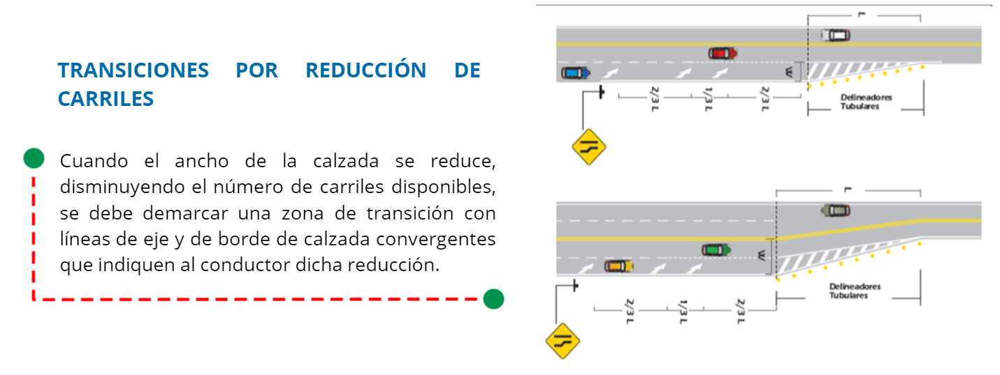
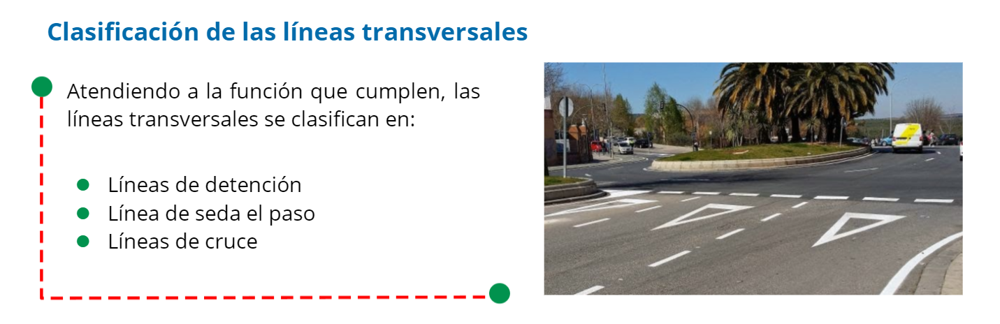
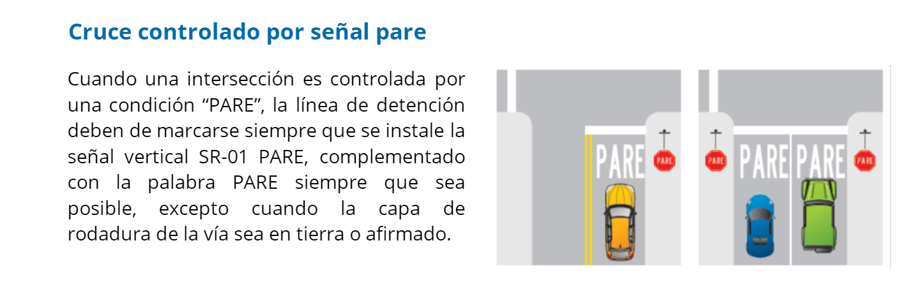
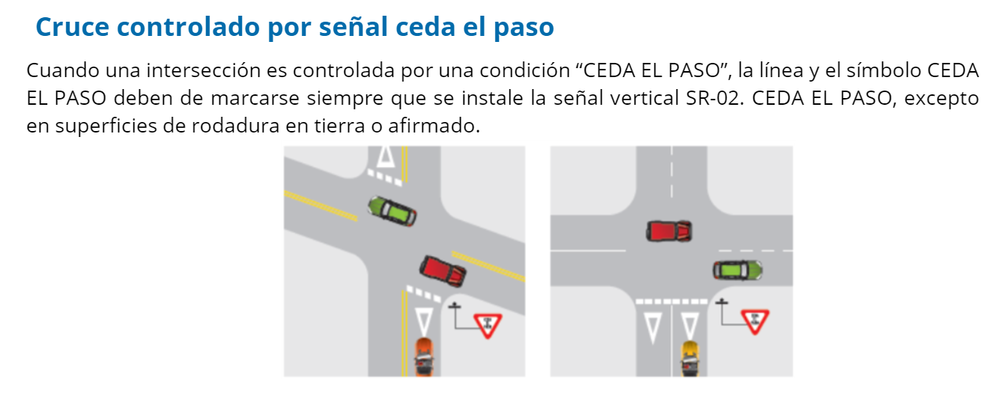
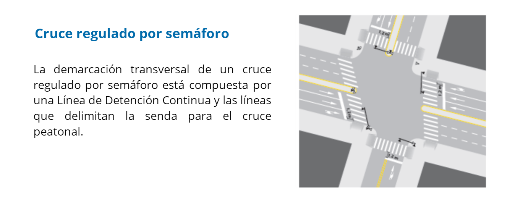
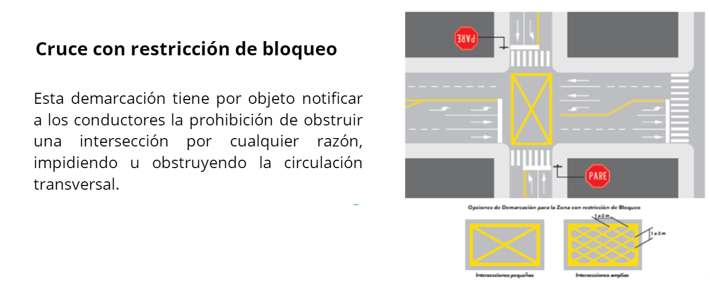
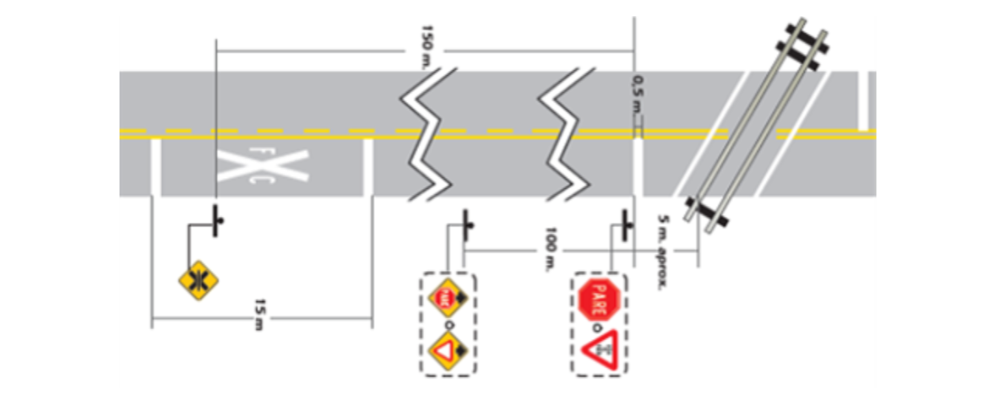
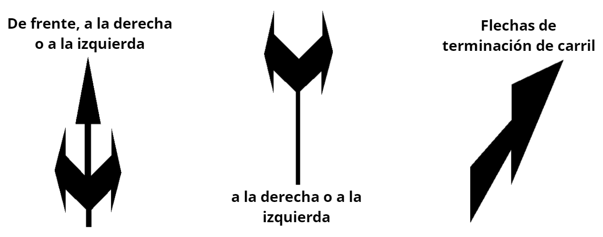
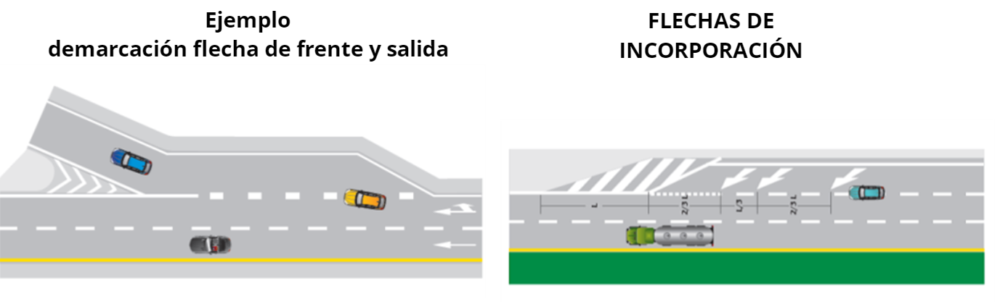
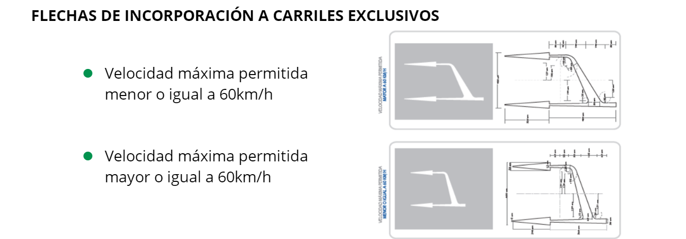
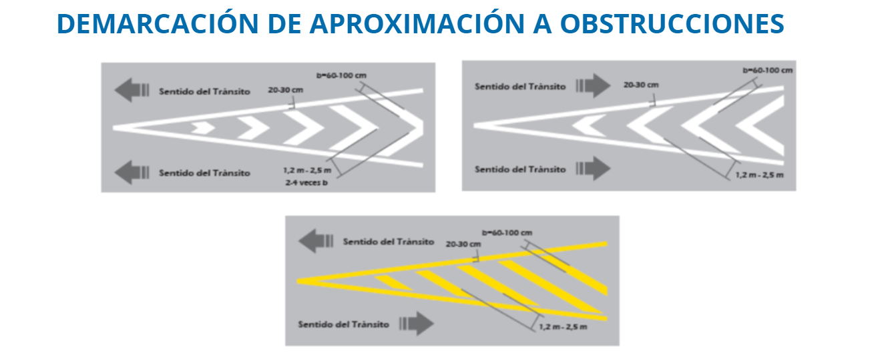
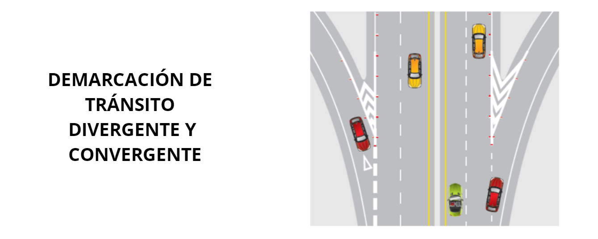
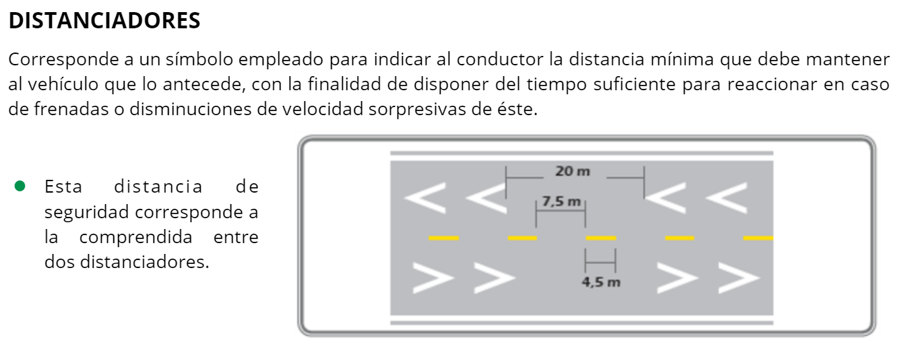
Señales verticales
De acuerdo con la función que desempeñan, las señales verticales se clasifican en 4 grupos:
reglamentarias
preventivas
informativas
transitorias
Haz clic en cada botón para conocer los tipos de intersecciones